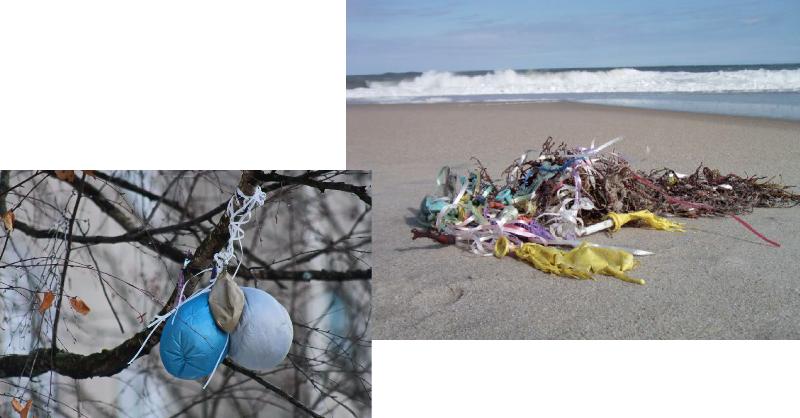

Some of the balloon debris and attachments are eventually found washed ashore.
...or stuck in trees
SCROLL TO CONTINUE
Seabirds are especially likely to swallow dangerous balloons because they may mistake deflated balloons for food, nesting materials, or just harmless things.

Another risk associated with balloon releases is their impact on power supply.
Some power companies estimate that 16-20% of their annual power outages are due to balloons.
CHECK OUT HOW BALLOONS CAUSE POWER OUTAGES